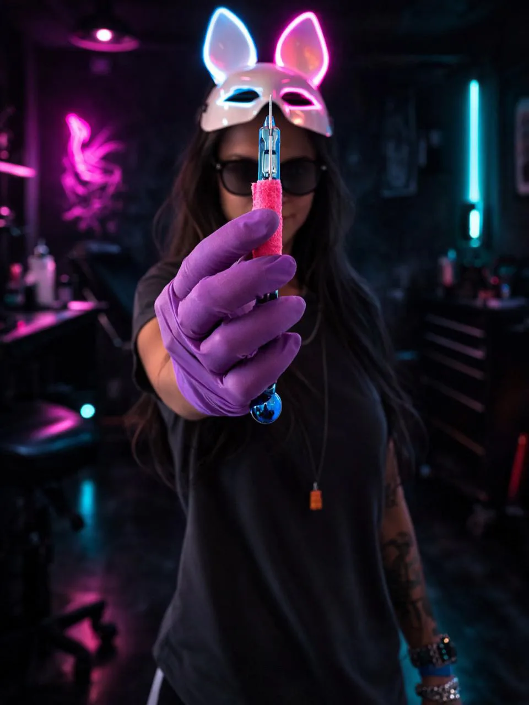
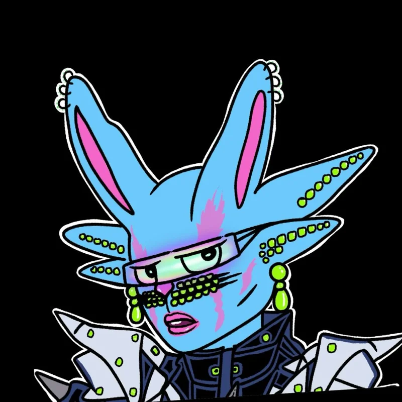

Sobre
Dani Coelho
Sou artista visual, tatuadora e criadora da DAC ART INK. Sou uma adulta autista, com múltiplas habilidades artísticas, e minha vivência no espectro influencia profundamente a forma como percebo e crio. A arte é a minha linguagem: o modo de expressar o que muitas vezes não cabe em palavras.
Minha produção parte da arte contemporânea, com forte influência surrealista. Transita entre o retrô, o nonsense, o urbano, o alternativo e o experimental, e passa pelo desenho, pela pintura, pela fotografia e pela arte digital. Trabalho em pequenas séries ou em peças únicas, valorizando a singularidade de cada uma.
Na pele, tatuo em handpoke, na técnica híbrida (handpoke + máquina) e com máquina artesanal.
- São José dos Campos, SP
- Handpoke · Híbrida · Máquina artesanal
- Arte autoral

DAC Galeria
Mais do que uma loja
A DAC Galeria nasceu da vontade de reunir minhas criações num só lugar: obras autorais, esculturas, objetos e acessórios selecionados por mim, que dialogam com a mesma estética.
Num tempo em que quase tudo é feito para ser visto por alguns segundos e esquecido, as coleções da galeria foram feitas para serem observadas com calma, por quem gosta de descobrir detalhes e construir a própria leitura.
